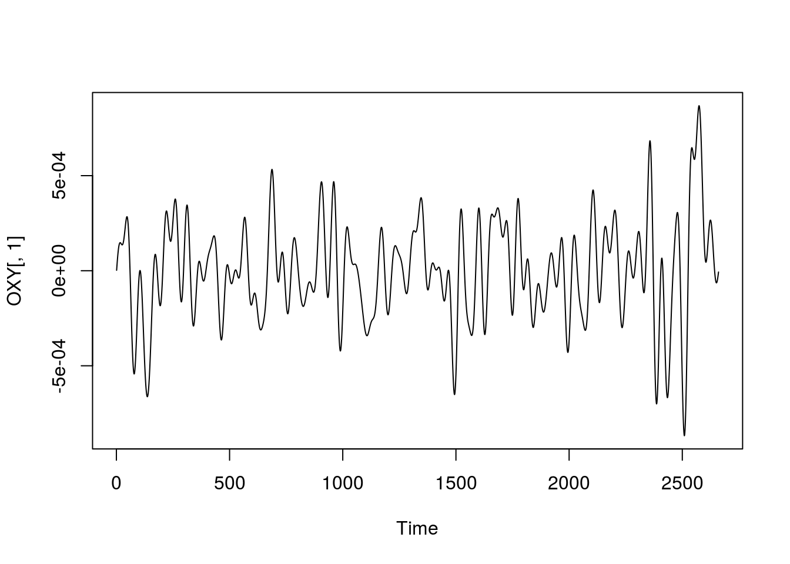
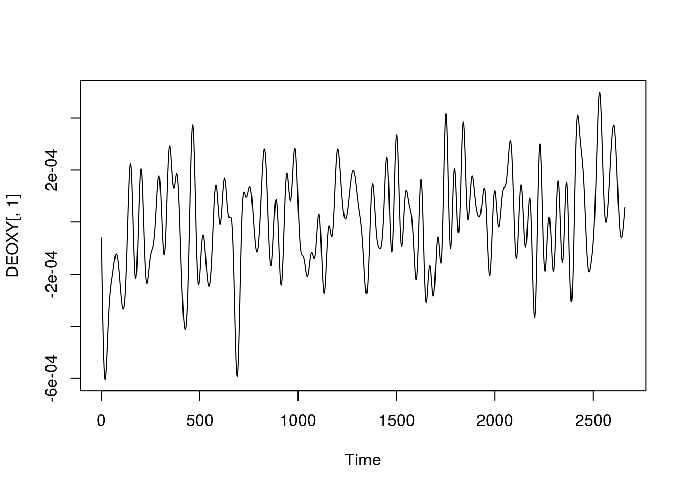
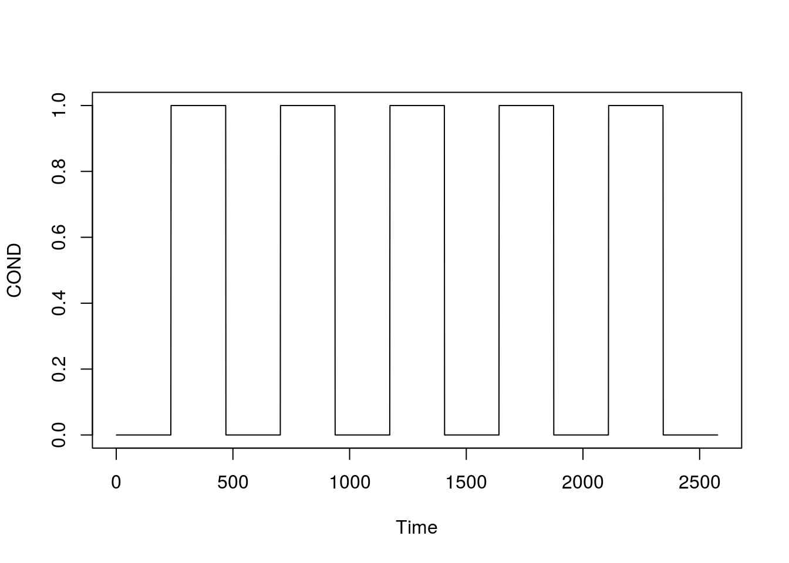
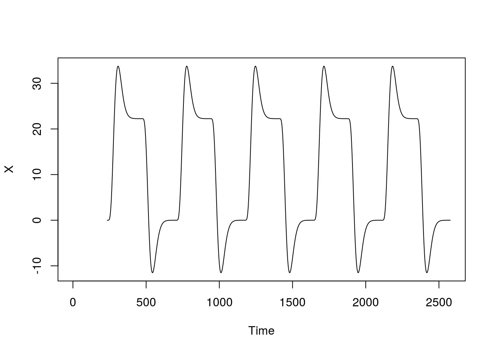

A espectroscopia do infravermelho próximo em funcionamento - fNIRs é uma tecnologia de neuroimagem para mapear o córtex humano, que desde 1977, é empregada para o mapeamento do cérebro de humanos e em animais através de sua oxigenação (Jobsis, 1977). Os tecidos humanos são relativamente transparentes à luz na janela espectral NIR, que é absorvida por compostos pigmentados (cromóforos) ou dispersa em tecidos (Ferrari, 2012). A luz NIR é capaz de penetrar nos tecidos humanos, uma vez que o fator dominante no seu transporte de tecido é a dispersão. A imagem em infravermelho próximo ou a imagem óptica difusa são utilizadas para detectar mudanças simultâneas nas propriedades ópticas do córtex humano a partir de múltiplos locais de medição e exibe os resultados na forma de um mapa ou imagem em uma área específica.
Atividade cerebral está associada a um número de eventos fisiológicos, alguns associados a mudanças nas propriedades ópticas do tecido cerebral e podem ser avaliadas por técnicas ópticas. As principais vantagens dos métodos ópticos incluem custo relativamente baixo, a especificidade bioquímica, a resolução temporal (na faixa de milissegundos), o potencial para medir simultaneamente os eventos intracelulares e intravasculares e a facilidade com que os dispositivos podem ser transportados (Ferrari, 2012).
Segundo Delpy (10997), utiliza-se níveis seguros de luz laser (com comprimentos de onda entre 650 e 1000 nm) para inferir a variação do nível de oxigenação do tecido cerebral de forma não invasiva, que penetram no tecido biológico e atingem o córtex, permitindo analisar a oxi-hemoglobina (O2Hb), deoxi-hemoglobina (HHb) e hemoglobina total (tHb; tHb = O2Hb + HHb) do sangue cerebral. Muitos outros cromóforos ainda absorvem a luz mas apenas essas são de importância clínica e exibem absorção dependente da oxigenação. Através delas pode-se buscar um melhor entendimento do acoplamento neuro-vascular, das flutuações neurofisiológicas e da hemodinâmica cerebral.
A técnica NIRs utiliza:
Três tipos de NIRS diferentes são usadas, cada uma baseada em um tipo específico de iluminação:
A modalidade CW ( ou ondas contínuas) que, com base na constante iluminação do tecido, mede a atenuação da luz através da cabeça. Essa modalidade mede apenas as alterações de oxigenação de O2Hb e HHb mas em relação às outras técnicas, oferece as vantagens de baixo custo e facilidade de transporte.
O método de freqüência-domínio (FD) que, iluminando a cabeça com luz modulada por intensidade, mede a atenuação e o atraso de fase da luz emergente.
A técnica do domínio do tempo (TD) que, iluminando a cabeça com pulsos de luz curtos, detecta a forma do pulso após a propagação através dos tecidos.
As modalidades FD e TD oferecem a possibilidade de caracterizar as propriedades ópticas dos tecidos (absorção e coeficientes de espalhamento reduzidos), dos quais é possível recuperar as concentrações absolutas de O2Hb e HHb.
As fibras ópticas são muito adequadas para qualquer posição e postura da cabeça. As medições de NIRS podem ser realizadas em ambientes naturais sem necessidade de restrição ou sedação e a profundidade adequada da penetração da luz NIR (quase a metade da distância do detector fonte) pode ser alcançada usando uma distância do detector em torno de 3cm. A seleção da distância ideal do detector de fonte depende da intensidade da luz NIR e do comprimento de onda, da idade do sujeito e a região da cabeça medida (Ferrari, 2012).
À medida que a luz injetada se difunde em todas as direções dentro dos tecidos da cabeça (couro cabeludo, crânio e espaço subaracnóideo preenchido com líquido cefalorraquidiano) tanto antes como depois de passar pelo tecido cerebral, a sensibilidade de cada par de fontes-detectores exibe uma distribuição espacial da luz NIR através das diferentes camadas com formato similar ao de uma banana (duas extremidades estreitas e uma curva para dentro em direção ao centro).
A atenuação relativamente alta da luz NIR no tecido é devida à hemoglobina principal do cromóforo (a proteína dos glóbulos vermelhos que faz o transporte de oxigênio) localizada em pequenos vasos (\(<1 mm\) de diâmetro) da microcirculação, como leitos capilares, arteriolares e venulares . NIRS é fracamente sensível aos vasos sanguíneos \(> 1mm\) porque absorvem completamente a luz.
Conforme apresentado por (Mesquita, 2008), O tecido biológico é altamente espalhador de luz e possui coeficientes de absorção relativamente baixos na região do infravermelho próximo do espectro eletromagnético. Estas propriedades permitem a penetração da luz no tecido e sua conseqüente propagação por alguns milímetros, através dos coeficientes de absorção \(\mu_{a}\)) e de espalhamento (\(\mu_s\)) com valores típicos para estas grandezas no cérebro \(\mu_a = 1,4 cm^{-1}\) e \(s = 350 cm^{-1}\). Com, \(\mu_a\) variando significativamente com a concentração e o tipo de hemoglobina presente no tecido. É esta sensibilidade das propriedades ópticas da oxi-hemoglobina (O2Hb) e da deoxihemoglobina (HHb), aliada ao fato de ser baixo o coeficiente de absorção da água nessa região, que permite determinar os níveis de oxigenação do tecido com base no espalhamento de luz.
Durante ativação cerebral (Mesquita2008), as variações nas concentrações de O2Hb e HHb resultam em variações na absorção da luz dentro do tecido. Para medidas hemodinâmicas funcionais típicas, assume-se que essas variações são pequenas, insuficientes para perturbar o caminho da luz através do tecido podendo ser generalizada através da Lei de Beer-Lambert:
\[ \Delta OD_i(t, \lambda) = L_{i,j} (\lambda) \sum_{j=1}^{N_{vox}}\Delta\mu_{a,j}(t, \lambda) . \]
onde, \(OD\) é a densidade óptica num detector \(i\), \(j\) é a fonte, \(\lambda\) é o comprimento da onda, \(\mu_a\) é o coeficiente de absorção do tecido e \(L_{i,j}\) é o livre caminho médio no tecido biológico entre a fonte e detector (na ordem de 28 \(\mu m\)).
No entanto, essa equação só é válida na ausência de espalhamento. Como o caminho médio da luz depende das propriedades de espalhamento do tecido, usa-se a lei de Beer-Lambert modificada, (MBLL, do inglês ) para contabilizar estes efeitos e levar em conta a propagação difusiva da luz, que inclui um fator de caminho diferencial adicional (\(l_{DPF}\)), de forma que \(OD\) passa a ser dada por:
\[ \Delta OD_i(t, \lambda) = \sum_{n}\mathcal{E}_n(\lambda).\Delta c_n(t).L_{i,j} (\lambda).l_{DPF}(\lambda) \]
onde a variação de concentração do n-ésimo cromóforo, \(\Delta C_n\), pode ser encontrada através de medidas de intensidade em função do tempo para n diferentes comprimentos de onda. No caso particular de \(n=2\), pode-se resolver o sistema e estimar as variações de O2Hb(t) e de HHb(t). Com isso, pode-se ver o coeficiente de extinção, distância entre emissor e detector, propriedades do tecido, etc.
Os experimentos de NIRS, no entanto, medem apenas as variações relativas de oxigenação do tecido. Os valores absolutos não são disponíveis, principalmente levando-se em consideração as diferentes estruturas cerebrais pelas quais a luz atravessa. Outras limitações também são: (a) a interferência da espessura do crânio (medidas cerebrais) ou da espessura do tecido adiposo (medidas musculares); (b) a contribuição controversa desconhecida da mioglobina no sinal muscular NIRS; (c) o efeito do volume sanguíneo muda no comprimento do tecido e, consequentemente no volume de amostra observado; (d) a dificuldade de prever o quanto de uma mudança de sinal NIRS observada é devido ao fluxo sanguíneo cerebral vs. couro cabeludo, ou (e) mudanças simultâneas no fluxo e no volume. Ainda assim, dado o fato de que a fração do volume de sangue arterial é de aproximadamente 30% no cérebro humano, a técnica NIRS oferece a possibilidade de obter informações sobre alterações de oxigenação que ocorrem dentro do compartimento venoso, sendo uma técnica bastante eficaz para detectar zonas de ativação cerebral.
Ao longo do tempo, o que se altera nos dados de fNIRS é a variação de oxyhemoglobina e deoxyhemoglobina.
No caso da coleta, o canal é o caminho entre o emissor e o detector. A montagem é escolhida de forma a varrer as regiões cerebrais as quais se pretende estudar (aprox 3cm).
http://www.youtube.com/watch?v=CJIZkZ2ol5A
E também:
http://www.youtube.com/watch?v=3LMXiDzcANQ
# Os dados já foram preprocessados
# - PCA para correcao de movimento
# - retirar outliers
# - filtro temporal: passa-banda (0.001-0.1Hz)
#Leitura de dados
OXY = read.table("Oxy781HZ30sBlock.txt", header=F)
DEOXY = read.table("Deoxy781HZ30sBlock.txt", header=F)Analisando o tamanho do arquivo e a taxa de amostragem:
# Taxa de amostragem do equipamento
HZ = 7.81
dim(OXY)## [1] 2660 20dim(DEOXY)## [1] 2660 20# Logo, temos de tempo de coleta:
tempo = dim(OXY)/HZ
tempo## [1] 340.588988 2.560819ts.plot(OXY[, 1])
ts.plot(DEOXY[, 1])
#Tarefa block-design - 30s
COND = 330Considerando uma tarefa que intercala Repouso e tarefa de 30s, ou seja nas seguintes condições (convertendo para frames): R: 1:234 T: 235:469 R: 470:703 T: 704:937 R: 938:1172 T: 1173:1406 R: 1407:1640 T: 1641:1874 R: 1875:2109 T: 2110:2343 R: 2344:2577
#Tarefa block-design - 30s
COND = array(0, 2577) #2577 para os primeiros 330s
COND[235:469] = 1
COND[704:937] = 1
COND[1173:1406] = 1
COND[1641:1874] = 1
COND[2110:2343] = 1
ts.plot(COND)
Considerando a função glover para convolução pela HRF canônica, para verificar como a Oxyhemoglobina se comporta.
Para prever o desenho experimental pela HRF, similar às aulas de ressonância:
glover = function(HZ){
a1 = 6
a2 = 12
b1 = 0.9
b2 = 0.9
d1 = 5.4
d2 = 10.8
c = 0.35
x = seq(0, 30, 1/HZ) # HZ is the Sampling Rate (Heartz)
glover1 = ((x/d1)^a1)*exp((-x+d1)/b1)
glover2 = ((x/d2)^a2)*exp((-x+d2)/b2)
G = glover1-c*glover2
return(G)
}
#HRF canonica
HRF = glover(HZ)
#Convolucao da condicao da tarefa pela HRF
X = filter(COND, HRF, method="convolution", side=1)
ts.plot(X) Para o comportamento da deoxy, espero o comportamento inverso (deoxy está negativamente correlacionada com a oxy).
Estamos modelando de forma similar: \[ Y_t = \alpha + \beta.X_t + \epsilon_T\]
# Vetor que contem as estatisticas t dos betas
# do GLM para cada canal (nesse experimento são 20)
mapaToxy = array(0, 20)
mapaTdeoxy = array(0, 20)
for(canal in 1:20){
# ajuste do GLM para oxy
# o que antes eram todos os voxeis de fMRI, em NIRS são os 20 canais
# o modelo prevê a OXY de cada canal em funço da HRF convoluída da cond.
# dessa forma, ao ter cond =1 pra tarefa e 0 para repouso, o teste:
modelo = lm(OXY[1:2577, canal]~X)
mapaToxy[canal] = summary(modelo)$coef[2, 3] #estat. t
#ajuste do GLM para deoxy
modelo = lm(DEOXY[1:2577, canal]~X)
mapaTdeoxy[canal] = summary(modelo)$coef[2, 3] #estat. t
}O mapa é o resultado do teste estatístico em todos os canais.
modelo1 = lm(OXY[1:2577, 1]~X)
mapaToxy[canal] = summary(modelo1)$coef[2, 3] #estat. t
summary(modelo1) ##
## Call:
## lm(formula = OXY[1:2577, 1] ~ X)
##
## Residuals:
## Min 1Q Median 3Q Max
## -0.0008340 -0.0001565 -0.0000107 0.0001493 0.0009014
##
## Coefficients:
## Estimate Std. Error t value Pr(>|t|)
## (Intercept) -3.349e-05 6.535e-06 -5.124 3.24e-07 ***
## X 3.263e-06 3.686e-07 8.851 < 2e-16 ***
## ---
## Signif. codes: 0 '***' 0.001 '**' 0.01 '*' 0.05 '.' 0.1 ' ' 1
##
## Residual standard error: 0.0002464 on 2341 degrees of freedom
## (234 observations deleted due to missingness)
## Multiple R-squared: 0.03238, Adjusted R-squared: 0.03197
## F-statistic: 78.34 on 1 and 2341 DF, p-value: < 2.2e-16 #ajuste do GLM para deoxy
modelo2 = lm(DEOXY[1:2577, 1]~X)
mapaTdeoxy[canal] = summary(modelo2)$coef[2, 3]
summary(modelo2) #estat. t##
## Call:
## lm(formula = DEOXY[1:2577, 1] ~ X)
##
## Residuals:
## Min 1Q Median 3Q Max
## -5.997e-04 -1.231e-04 6.810e-06 1.172e-04 4.925e-04
##
## Coefficients:
## Estimate Std. Error t value Pr(>|t|)
## (Intercept) 6.990e-06 4.636e-06 1.508 0.1317
## X 4.553e-07 2.615e-07 1.741 0.0818 .
## ---
## Signif. codes: 0 '***' 0.001 '**' 0.01 '*' 0.05 '.' 0.1 ' ' 1
##
## Residual standard error: 0.0001748 on 2341 degrees of freedom
## (234 observations deleted due to missingness)
## Multiple R-squared: 0.001293, Adjusted R-squared: 0.0008668
## F-statistic: 3.032 on 1 and 2341 DF, p-value: 0.08178Uma consideração do GLM é que os erros (resíduos) são independentes. Na prática, como a taxa de amostragem do NIRS é superior a do fMRI, o problema da autocorrelação dos resíduos é maior. Para mapas de ativação estatísticos, os procedimentos de pre-whitening, pre-colouring ou semi-paramétricos são necessários pois os valores de teste T do NIRS acabam com uma magnitude muito maior.
Na aula o professor mostrou o equipamento NIRSport da empresa NIRx (Alemanha). Além da empresa NIRx, tem a Artinis e a Hitashi.
No software NIRx Star que se utiliza para fazer a calibração dos optodos e coleta do sinal.
Na calibração pode-se corrigir o ajuste da touca com:
Ao iniciar a gravação, pode-se ver os sinais: vermelho a oxihemoblogina (HbO) e azul a desoxihemoglobina (Hb). Na onda, é possível ver o artefato cardíaco no sinal (mais forte na oxy pois vem das arteríolas). A deoxy se encontra nas vênulas, que é mais fraco. Uma vantagem em relação ao EEG é que como se trata de luz infravermelho e não pulsos elétricos, não há problemas de artefatos ocasionados por movimentos ou fala.
Pode-se utilizar para atividades de neurofeedback.
Na aula, foi mostrado com um voluntário um experimento de geração de números aleatórios, intercalando dois tipos de atividades:
Após a coleta, o professor mostrou como processa no NIRSLab.
Nesse caso, o GLM para cada canal é:
\[ Y_t = \alpha + \beta.X_t + \epsilon_t \]
e na visualização é possível ver cada \(\beta\) (azul é para deativação e vermelho para ativação). As regiões laterais são o córtex prefrontal dorsolateral (para funções executivas) e o medial (região da default mode).
Para ver essas regiões são estatísticamente significantes, é necessário especificar o contraste (marcar com 1 e 0). É possível verificar por exemplo maior ativação no hemisfério oposto a mão que escreve.
No experimento sugere-se que as tarefas sejam alternadas por conta do artefato de inclinação. No desenho experimental, alterna-se as tarefas para garantir que a variação da hemodinâmica seja realmente da tarefa cognitiva.
Prova: Sobre NIRs.